Japan travel guides
Budget planning, Tokyo routes, transport choices, and trip basics.
Start with the decisions that change your total cost: how many cities to visit, where to stay, how to get online, and whether a rail pass actually pays off.
Budget Daruma picks
Start with the three decisions that usually change the total cost.
Planning tools
Turn the guides into booking decisions.
Browse by region
Pick the part of Japan you are planning now.
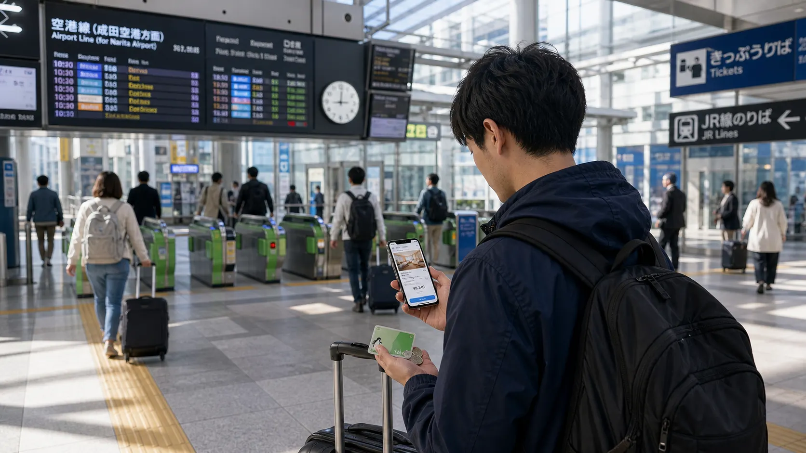
June 2026 trends Japan travel trends June 2026Visitor demand, Fuji rules, crowd pressure, and the next booking decisions to verify.
 Travel trends
Is Japan too crowded in 2026?
Travel trends
Is Japan too crowded in 2026?
How to avoid the worst bottlenecks in Kyoto, Tokyo, Osaka, and Mount Fuji.
 Mount Fuji
Mount Fuji day trip from Tokyo
Mount Fuji
Mount Fuji day trip from Tokyo
Budget train, bus, tour, crowd timing, and overnight tradeoffs.
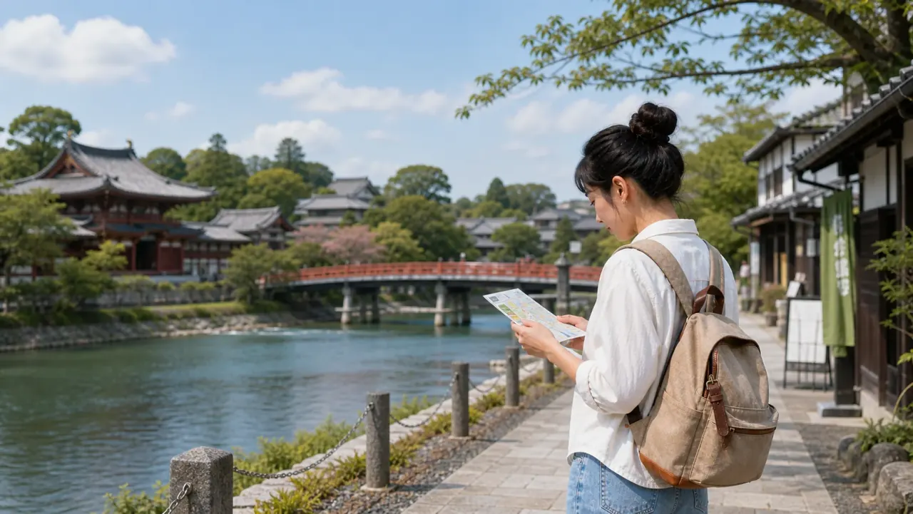
Kansai day trips Best day trips from Kyoto and OsakaCompare Nara, Uji, Kobe, and Himeji by base, time, budget pressure, and trip style.
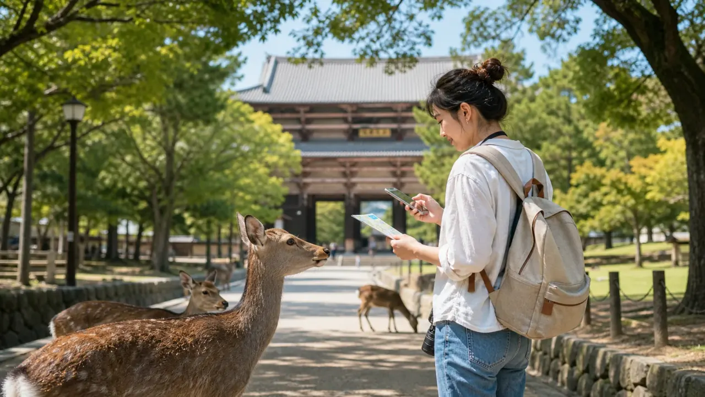
Nara day trip Nara from Osaka or KyotoChoose JR or Kintetsu, plan Nara Park, Todai-ji, timing, food, and budget.
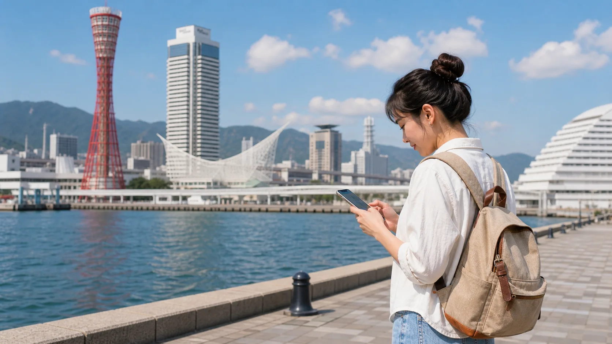
Kobe day trip Kobe from Osaka or KyotoCompare JR, Hankyu, and Hanshin, then plan Kitano, Motomachi, harbor views, and budget.
 Himeji day trip
Himeji Castle from Osaka or Kyoto
Himeji day trip
Himeji Castle from Osaka or Kyoto
Compare regular JR and Shinkansen, then plan Himeji Castle, Kokoen Garden, timing, and budget.
Uji day trip Uji from Kyoto or OsakaPlan Byodoin, matcha streets, Uji River, JR vs Keihan, half-day timing, and budget.
 Budget planning
Japan trip cost in 2026
Budget planning
Japan trip cost in 2026
Daily budget ranges, example trip totals, and the categories that matter most.
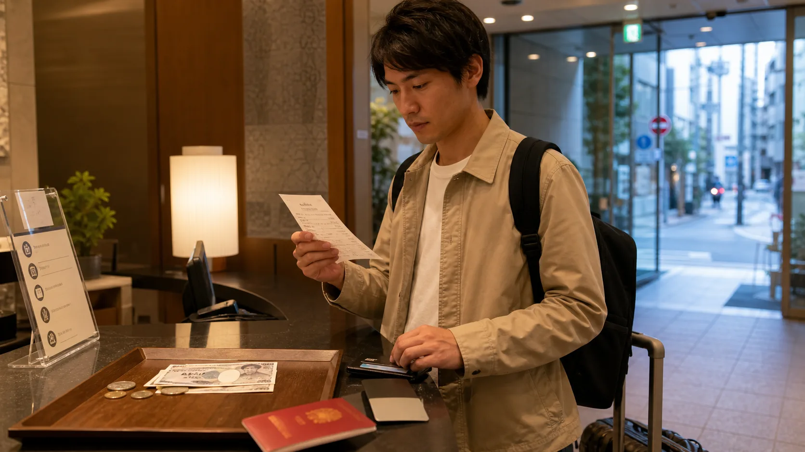
Tourist taxes Japan tourist taxes in 2026Departure tax, accommodation taxes, onsen fees, and hidden costs before checkout.
 Tokyo city guide
Tokyo for budget travelers
Tokyo city guide
Tokyo for budget travelers
Main sightseeing zones, hotel bases, cheap food, airport access, and route planning.
 Kyoto city guide
Kyoto for budget travelers
Kyoto city guide
Kyoto for budget travelers
Sightseeing zones, hotel bases, crowd timing, airport access, and route planning.
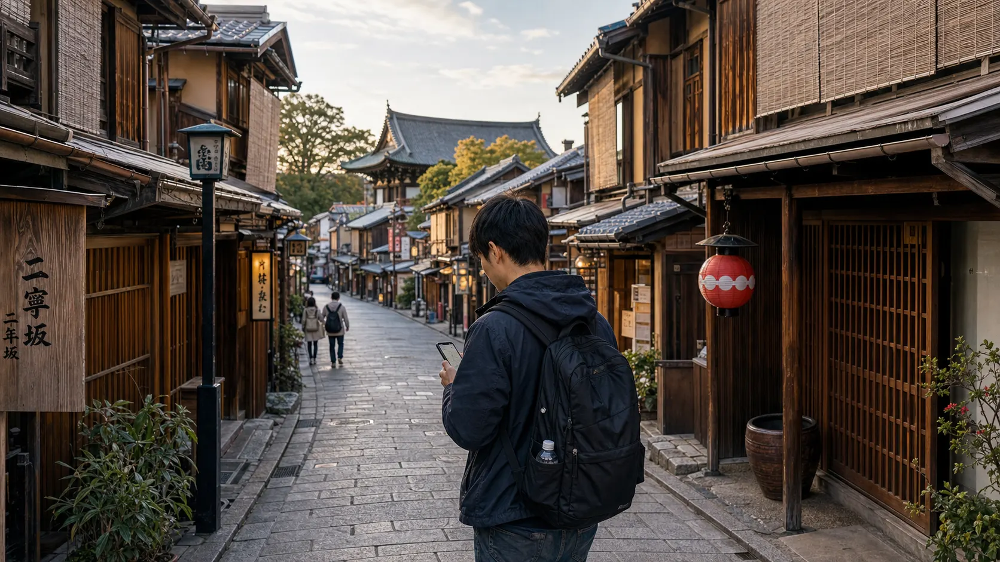
Kyoto route Kyoto 2-day budget itineraryGroup Higashiyama, Gion, Fushimi Inari, Arashiyama, food, and hotel base decisions.
 Osaka city guide
Osaka for budget travelers
Osaka city guide
Osaka for budget travelers
Food zones, Namba vs Umeda, Osaka Castle, Kansai Airport access, and day trips.
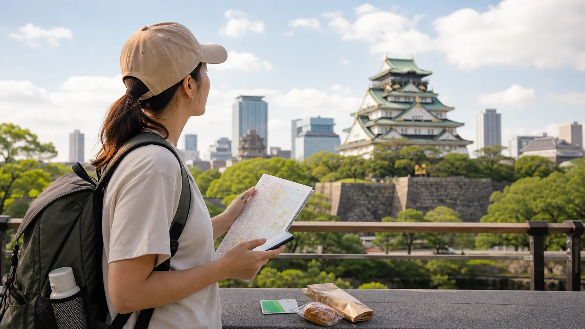
Osaka route Osaka 2-day budget itineraryPlan Namba, Dotonbori, Osaka Castle, Shinsekai, Umeda, Bay Area, and food.
 Classic route
Tokyo, Kyoto, Osaka in 7 days
Classic route
Tokyo, Kyoto, Osaka in 7 days
A focused first-trip route with hotel bases, city order, transport math, and what to skip.
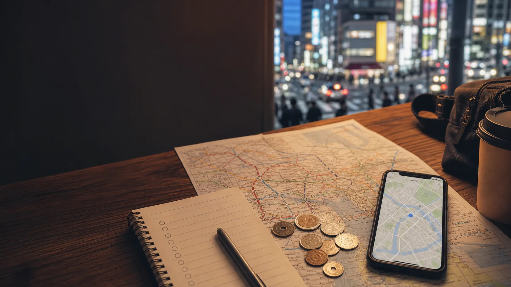
Start here First Japan trip checklistThe booking order for costs, hotels, airport transfers, rail, eSIM, and insurance.
 Tokyo route
Tokyo 5-day budget itinerary
Tokyo route
Tokyo 5-day budget itinerary
A first-time Tokyo route grouped by neighborhoods to reduce backtracking.
 Transport savings
JR Pass alternatives in 2026
Transport savings
JR Pass alternatives in 2026
When to skip the nationwide pass and use smarter transport options.
 Airport transfers
Japan airport transfer guide
Airport transfers
Japan airport transfer guide
How to choose between trains, airport buses, taxis, private transfers, and luggage delivery.
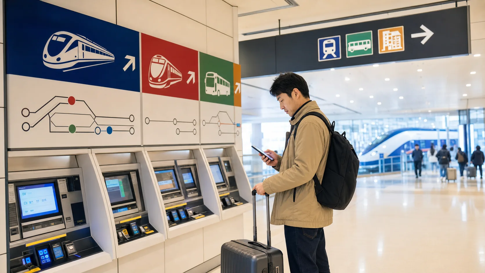
Narita Airport Narita Airport to TokyoChoose between Skyliner, Narita Express, airport bus, taxi, and hotel-area fit.
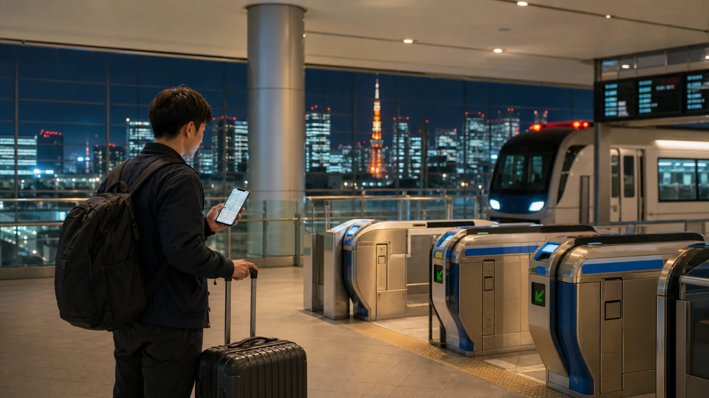
Haneda Airport Haneda Airport to TokyoCompare Monorail, Keikyu, airport bus, taxi, late arrivals, and hotel bases.
 Kansai Airport
KIX to Osaka or Kyoto
Kansai Airport
KIX to Osaka or Kyoto
Choose between Namba, Umeda, Shin-Osaka, Kyoto, bus, rail, taxi, and transfer.
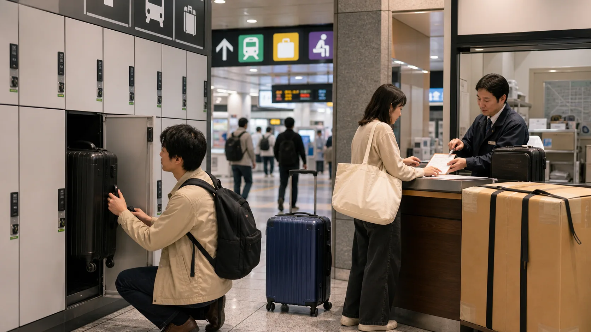
Luggage Japan luggage delivery and storageDecide between airport delivery, hotel forwarding, station lockers, and carrying the bag.
 Internet
Japan eSIM vs pocket WiFi
Internet
Japan eSIM vs pocket WiFi
How to choose data for solo travel, couples, families, and laptop-heavy trips.
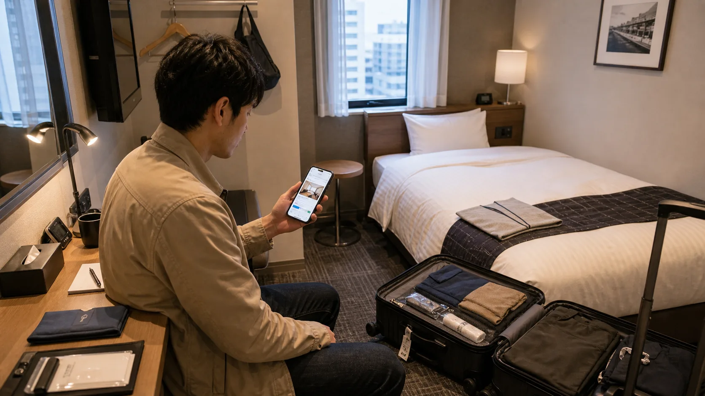
Hotels Japan hotel booking checklistCheck station access, room size, taxes, luggage storage, cancellation, and transfer fit.
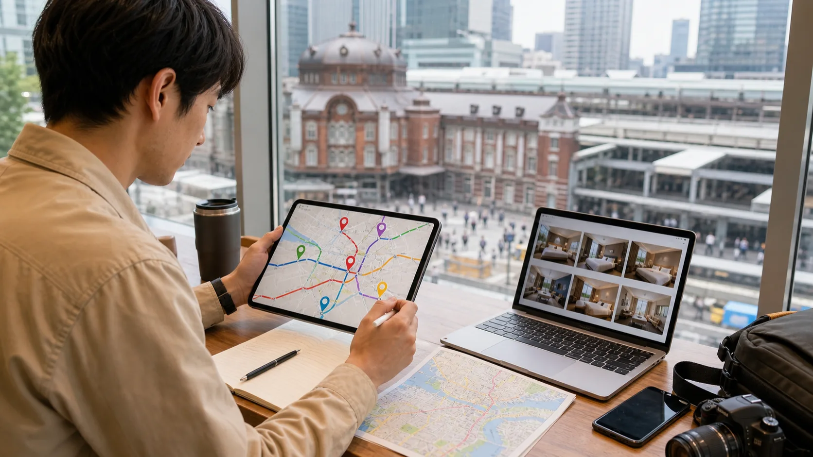
Tokyo hotels Tokyo hotel area comparisonCompare Ueno, Asakusa, Shinjuku, Ginza, Tokyo Station, Ikebukuro, and Shinagawa.
 Hotels
Where to stay in Tokyo on a budget
Hotels
Where to stay in Tokyo on a budget
Ueno, Asakusa, Ikebukuro, Shinjuku, and Tokyo Station tradeoffs.
 Hotels
Where to stay in Kyoto on a budget
Hotels
Where to stay in Kyoto on a budget
Kyoto Station, Shijo-Kawaramachi, Gion, Nijo, and when Osaka works better.
 Hotels
Where to stay in Osaka on a budget
Hotels
Where to stay in Osaka on a budget
Namba, Umeda, Tennoji, Shin-Osaka, Osaka Bay, and Kyoto-base tradeoffs.
 Insurance
Japan travel insurance checklist
Insurance
Japan travel insurance checklist
Medical coverage, delays, cancellation, translation help, and what to check.